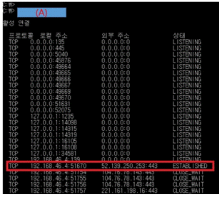

| 항목 | 내용 |
|---|---|
| 📅 시험일자 | 2024년 11월 3일 (정기 필기시험) |
| 🧭 시험 목적 | 네트워크 기본 이론 및 실무 적용 능력 평가 |
| 🧪 주요 출제 영역 | TCP/IP 구조, OSI 7계층, IPv6 헤더, 서브넷 마스크 계산, DNS, VPN, SDN, NFV 등 |
| 🔁 반복 출제 경향 | 프레임 단위, 클래스 구분, 포트 번호, 프로토콜 기능, 루프백 주소, 흐름 제어 방식 |
| 📌 학습 포인트 | 프로토콜 구조 이해, 계층별 역할 구분, 명령어 사용법, 보안 통신 방식, 실무 적용 사례 |
| 🎯 활용 목적 | 실전 대비, 자주 나오는 유형 파악, 핵심 개념 암기, 문제 풀이 전략 수립 |
[문제 1]
TCP/IP 모델에서 데이터 링크 계층의 데이터 단위로 올바른 것은?
① 메시지 ② 세그먼트 ③ 데이터그램 ❹ 프레임
정답: ❹
해설:
데이터 링크 계층에서는 데이터를 프레임 단위로 처리합니다.
프레임은 물리적 전송을 위한 포맷으로, MAC 주소 등을 포함합니다.
보기 설명:
① 메시지: 응용 계층 데이터 단위
② 세그먼트: 전송 계층 데이터 단위
③ 데이터그램: 네트워크 계층 데이터 단위
🧸 쉬운 해설:
프레임은 **"데이터를 담는 상자"**야.
❹번이 **링크 계층에서 쓰는 단위야!
[문제 2]
IP 주소 `11101011.10001111.11111100.11001111`이 속한 클래스는?
① A Class ② B Class ③ C Class ❹ D Class
정답: ❹
해설:
IP 주소의 첫 옥텟 11101011은 10진수로 235이며,
첫 4비트가 1110이면 D 클래스입니다.
D 클래스는 멀티캐스트용으로 사용되며, 범위는 224.0.0.0 ~ 239.255.255.255입니다.
보기 설명:
🧸 쉬운 해설:
D 클래스는 **"여럿에게 동시에 보내는 주소"**야.
❹번이 **멀티캐스트용 주소야!
[문제 3]
IPv6 헤더에서 네트워크 혼잡 시 데이터그램을 버릴지 결정하는 필드는?
① Version ❷ Priority ③ Next Header ④ Hop Limit
정답: ❷
해설:
IPv6 헤더의 Traffic Class 필드는 패킷의 우선순위를 지정하며,
혼잡 시 중요도가 낮은 패킷을 먼저 버릴지 결정하는 기준이 됩니다.
※ 과거에는 Priority로 불렸으나 현재는 Traffic Class로 통합됨.
보기 설명:
🧸 쉬운 해설:
Traffic Class는 **"누가 더 급한지 정하는 줄서기"**야.
❷번이 **혼잡 시 버릴지 결정하는 기준이야!
[문제 4]
IP 패킷을 적절한 크기로 분할할 때 기준이 되는 것은?
① TOS ❷ MTU ③ TTL ④ Port Number
정답: ❷
해설:
MTU(Maximum Transmission Unit)는 한 번에 전송 가능한 최대 크기를 의미하며, 이를 기준으로 패킷을 분할합니다.
보기 설명:
① TOS: 서비스 유형
③ TTL: 패킷 수명
④ Port Number: 전송 계층 식별자
🧸 쉬운 해설:
MTU는 **"한 번에 보낼 수 있는 최대 크기"**야.
❷번이 **패킷 나눌 때 기준이야!
[문제 5]
TCP 헤더에서 오류 검출을 위한 필드는?
① Offset ❷ Checksum ③ Source Port ④ Sequence Number
정답: ❷
해설:
Checksum은 데이터 전송 중 오류가 발생했는지 확인하는 데 사용됩니다.
보기 설명:
① Offset: 데이터 시작 위치
③ Source Port: 송신 포트 번호
④ Sequence Number: 데이터 순서 정보
🧸 쉬운 해설:
Checksum은 **"데이터가 망가지지 않았는지 확인하는 숫자"**야.
❷번이 **에러 검출용이야!
[문제 6]
다음 중 ICMP 메시지 내용으로 옳지 않은 것은?
❶ 호스트의 IP Address가 중복된 경우
② 목적지까지 데이터를 보낼 수 없는 경우
③ TTL 값이 0이 되어 데이터를 삭제할 경우
④ 헤더 오류가 발생한 경우
정답: ❶
해설:
ICMP는 네트워크 오류 및 상태를 알리는 프로토콜입니다.
IP 중복은 ICMP가 아닌 ARP 또는 DHCP에서 처리됩니다.
따라서 보기 ❶은 ICMP 메시지에 해당하지 않습니다.
보기 설명:
🧸 쉬운 해설:
IP 중복은 "ICMP가 아닌 다른 방식으로 처리돼"
❶번은 **ICMP 메시지에 해당하지 않아!
[문제 7]
IGMP 프로토콜의 주된 기능은?
① 오류 보고 ② 대용량 전송 ❸ 멀티캐스트 그룹 관리 ④ 물리주소 확인
정답: ❸
해설:
IGMP는 멀티캐스트 그룹에 가입한 호스트를 관리하는 데 사용됩니다.
보기 설명:
① 오류 보고: ICMP 기능
② 대용량 전송: FTP 등
④ 물리주소 확인: ARP 기능
🧸 쉬운 해설:
IGMP는 **"멀티캐스트 모임 명단 관리하는 비서"**야.
❸번이 **그룹 관리 기능이야!
[문제 8]
TCP/IP에서 Unicast의 의미로 올바른 것은?
① 한 호스트 → 여러 호스트
❷ 한 호스트 → 한 호스트
③ 한 호스트 → 전체 호스트
④ 한 호스트 → 특정 그룹
정답: ❷
해설:
Unicast는 한 송신자가 한 수신자에게 데이터를 전송하는 방식입니다.
보기 설명:
① Broadcast
③ Broadcast
④ Multicast
🧸 쉬운 해설:
Unicast는 **"1:1 대화"**야.
❷번이 **딱 한 명에게 보내는 방식이야!
[문제 9]
IP 주소 `127.0.0.1`의 의미는?
① 모든 네트워크
② 사설 IP
③ 모든 노드
❹ 루프백 테스트용
정답: ❹
해설:
127.0.0.1은 루프백 주소로, 자신의 컴퓨터를 테스트할 때 사용됩니다.
보기 설명:
① 전체 네트워크: 0.0.0.0
② 사설 IP: 192.168.x.x 등
③ 브로드캐스트 주소
🧸 쉬운 해설:
127.0.0.1은 **"나 자신에게 보내는 편지"**야.
❹번이 **루프백 테스트 주소야!
[문제 10]
TCP 3-Way Handshaking의 마지막 단계에서 사용되는 제어 Flag는?
① SYN ② RST ③ SYN, ACK ❹ ACK
정답: ❹
해설:
3단계에서는 클라이언트가 서버의 SYN-ACK에 대해 ACK를 보내며 연결이 완료됩니다.
보기 설명:
① SYN: 연결 요청
② RST: 연결 초기화
③ SYN, ACK: 서버 응답
🧸 쉬운 해설:
ACK는 "좋아, 연결하자!"라는 마지막 인사야.
❹번이 **마무리 단계에서 쓰는 플래그야!
[문제 11]
네트워크관리사 Kim 사원은 스위치에 원격 접속 시 Telnet 대신 SSH를 사용하려 한다.
다음 중 SSH의 특징으로 옳지 않은 것은?
① Telnet에 비해 보안성이 뛰어나다.
② SSH-1은 RSA 암호화를 사용한다.
③ SSH-2는 다양한 키 교환 방식을 지원한다.
❹ TCP/23번을 이용한다.
정답: ❹
해설:
SSH는 보안성이 높은 원격 접속 프로토콜로, 기본적으로 TCP 22번 포트를 사용합니다.
❹번은 Telnet의 포트 번호로 잘못된 설명입니다.
보기 설명:
🧸 쉬운 해설:
SSH는 **"잠금장치 달린 원격 문"**이야.
❹번은 문 번호가 틀렸어! SSH는 22번 이야!
[문제 12]
관리자 Kim은 443 포트를 통해 원격 접속 흔적을 확인하고자 한다.
Windows 명령 프롬프트에서 사용해야 할 명령어는?
① ping ② tracert ❸ netstat –an ④ nslookup

정답: ❸
해설:
netstat –an은 현재 열려 있는 포트와 연결 상태를 확인할 수 있는 명령어입니다.
443 포트는 HTTPS 통신에 사용되며, 원격 접속 흔적을 확인할 때 유용합니다.
보기 설명:
🧸 쉬운 해설:
netstat –an은 **"누가 어디랑 연결됐는지 보는 CCTV"**야.
❸번이 포트 상태 확인에 딱이야!
[문제 13]
TCP/IP 프로토콜 스택에서 SNMP의 기능으로 가장 올바른 것은?
① 대규모 망 관리
② 에러 보고
❸ 장비 관리 및 감시
④ 연결성 점검 및 혼잡 제어
정답: ❸
해설:
SNMP(Simple Network Management Protocol)는 네트워크 장비의 상태를 모니터링하고 관리하는 데 사용됩니다.
보기 설명:
① 망 관리: SNMP의 일부 기능
② 에러 보고: ICMP 기능
④ 연결성 점검: TCP/ICMP 기능
🧸 쉬운 해설:
SNMP는 **"장비 상태를 지켜보는 관리자"**야.
❸번이 **감시와 관리 기능이야!
[문제 14]
HTTP와 HTTPS의 차이점에 대한 설명으로 올바른 것은?
① HTTP는 안전한 데이터 전송을 보장한다.
② HTTP는 디지털 인증서를 사용한다.
❸ HTTP는 포트 80, HTTPS는 포트 443을 사용한다.
④ HTTP는 SSL/TLS를 사용하여 신원을 검증한다.
정답: ❸
해설:
HTTP는 기본적으로 포트 80을, HTTPS는 암호화된 통신을 위해 포트 443을 사용합니다.
보기 설명:
① HTTP는 암호화되지 않음
② 디지털 인증서는 HTTPS에서 사용
④ SSL/TLS는 HTTPS의 기능
🧸 쉬운 해설:
포트 번호는 **"문 번호"**야.
❸번은 **HTTP와 HTTPS가 쓰는 문 번호를 정확히 말했어!
[문제 15]
다음 지문에 따라 서브네팅할 경우 적절한 서브넷 마스크는?
네트워크 담당자 Kim사원은
C class IP주소인 ‘200.100.20.0’ 네트워크를
각 네트워크 당 60개의 호스트가 사용할 수 있도록 서브네팅(subnetting)을 하고자 한다.
① 255.255.255.128 ❷ 255.255.255.192 ③ 255.255.255.224 ④ 255.255.255.240
정답: ❷
해설:
C 클래스 기본 서브넷은 255.255.255.0 (/24)이며,
60개의 호스트를 수용하려면 최소 6비트가 필요 → 2⁶ = 64 IP
→ 2개는 네트워크/브로드캐스트 주소로 제외 → 62개 사용 가능
255.255.255.192는 /26에 해당하며, 64개의 IP를 제공하므로 조건에 적합합니다.
보기 설명:
🧸 쉬운 해설:
서브넷 마스크는 **"주소를 나누는 칸막이"**야.
❷번이 **지문 조건에 맞는 칸막이야!
[문제 16]
파일 전송을 위한 프로토콜로 (A)에 들어갈 알맞은 용어는?
서버관리자는 ( A ) 프로토콜을 이용하여 서버 간 자료를 송수신 하고자 한다.
해당 프로토콜은 서버 명령 채널 21번,
데이터 전송 채널은 20번 포트를 사용하며
데이터 암호화 기능을 제공하지 않는다.
❶ FTP ② SFTP ③ FRPS ④ CMD
정답: ❶
해설:
FTP(File Transfer Protocol)는 파일을 서버와 클라이언트 간에 전송하기 위한 표준 프로토콜입니다.
보기 설명:
② SFTP: SSH 기반 보안 FTP
③ FRPS: 존재하지 않는 프로토콜
④ CMD: 명령 프롬프트
🧸 쉬운 해설:
FTP는 **"파일을 보내는 택배 기사"**야.
❶번이 **기본적인 전송 프로토콜이야!
[문제 17]
호스트 이름과 IP 주소를 연결하는 설정 파일로 (A)에 들어갈 알맞은 것은?
- 서버관리자 Kim 사원은 DNS 서버가 없고 인터넷이 없는 환경에서 그룹웨어를 운영하고 있다.
그룹웨어 주소를 치고 그룹웨어를 접속하고 싶을 경우 ( A )파일을 수정하여 로컬 DNS를 설정할 수 있다.
① /etc/deny ❷ /etc/hosts ③ /etc/allow ④ /etc/services
정답: ❷
해설:
/etc/hosts는 호스트 이름과 IP 주소를 수동으로 매핑하는 파일입니다.
보기 설명:
① /etc/deny: 접근 거부 설정
③ /etc/allow: 접근 허용 설정
④ /etc/services: 서비스와 포트 매핑 정보
🧸 쉬운 해설:
/etc/hosts는 **"이름과 주소를 연결하는 전화번호부"**야.
❷번이 **IP랑 이름을 연결해줘!
[문제 18]
패킷 교환망의 특징으로 옳지 않은 것은?
① 가상회선과 데이터그램으로 분류됨
② 메시지를 패킷으로 나눔
❸ 데이터가 많을수록 속도가 빨라짐
④ 블록킹 현상이 없음
정답: ❸
해설:
망에 데이터가 많아지면 혼잡이 발생해 속도가 느려질 수 있습니다.
❸번은 잘못된 설명입니다.
보기 설명:
① 연결 방식 분류
② 패킷 단위 전송
④ 비동기 방식으로 블록킹 없음
🧸 쉬운 해설:
데이터가 많으면 "길이 막혀서 느려져"
❸번은 **오히려 느려지는데 빨라진다고 해서 틀렸어!
[문제 19]
데이터가 없어도 타임 슬롯을 할당하는 비효율적인 다중화 방식은?
❶ TDM ② STDM ③ FDM ④ FDMA
정답: ❶
해설:
TDM은 시간 단위로 슬롯을 고정 배정하기 때문에 데이터가 없어도 대역폭이 낭비됩니다.
보기 설명:
② STDM: 통계 기반 동적 할당
③ FDM: 주파수 분할
④ FDMA: 주파수 기반 다중 접속
🧸 쉬운 해설:
TDM은 **"시간표대로 움직이는 버스"**야.
❶번은 **빈 자리도 그냥 지나가서 낭비돼!
[문제 20]
IoT 환경에서 근거리 무선 통신을 위한 기술로 (A)에 들어갈 알맞은 것은?
- 지능형(스마트)홈 통신에 사용되는 ( A )은/는
10m 이내의 짧은 거리게 존재하는 컴퓨터와 주변 기기, 휴대폰, 가전제품 등을 무선으로 연결하며
이들 기간간의 통신을 지원함으로써 다양한 응용 서비스를 가능하도록 하는 네트워크 영역을 말하며
UWB, ZigBee, RFID, 블루투스 기술 등이 활용된다..
❶ WPAN ② LTE-M ③ NB-IoT ④ LAN
정답: ❶
해설:
WPAN(Wireless Personal Area Network)은 블루투스 등 근거리 무선 통신에 사용되는 기술입니다.
보기 설명:
② LTE-M: 저전력 광역 통신
③ NB-IoT: 협대역 IoT 통신
④ LAN: 유선 근거리 통신
🧸 쉬운 해설:
WPAN은 **"가까운 거리에서 무선으로 말하는 기술"**이야.
❶번이 **IoT에 딱 맞는 근거리 기술이야!
[문제 21]
네트워크 기능을 소프트웨어로 구현하여 유연성과 확장성을 제공하는 기술로 (A)에 들어갈 알맞은 용어는?
- "(A)는 네트워킹에 필요한 모든 유형의 자원을 추상화하고,
소프트웨어 기반으로 자동으로 관리와 제어를 가능하게 하는 가상화 기술을 의미한다.
통신 사업자들은 이러한 (A) 기술을 도입하면서 점점 복잡해지는
네트워크의 관리 용이성, 관리 비용 절감, 네트워크 민첩성 등의 장점과 효율성을 얻고자 한다."
❶ NFV (Network Functions Virtualization)
② WMN (Wireless Mesh Network)
③ VPN (Virtual Private Network)
④ CDN (Content Delivery Network)
정답: ❶
해설:
NFV(Network Functions Virtualization)는 네트워크 기능을 소프트웨어로 구현하여 하드웨어 의존도를 줄이고 유연한 네트워크 운영을 가능하게 합니다.
보기 설명:
② WMN: 무선 메시 네트워크
③ VPN: 가상 사설망
④ CDN: 콘텐츠 전송 네트워크
🧸 쉬운 해설:
NFV는 **"네트워크 기능을 프로그램처럼 돌리는 기술"**이야.
❶번이 **가상화된 네트워크 기능이야!
[문제 22]
OSI 7 Layer 중 세션 계층의 역할로 옳지 않은 것은?
① 대화 제어 ❷ 에러 제어 ③ 연결 설정 종료 ④ 동기화
정답: ❷
해설:
세션 계층은 통신 세션의 설정, 유지, 종료 및 동기화를 담당합니다.
에러 제어는 전송 계층의 역할이며, 데이터의 무결성과 재전송을 관리합니다.
보기 설명:
🧸 쉬운 해설:
세션 계층은 **"대화의 시작과 끝을 정리하는 사회자"**야.
❷번은 에러 제어라서 다른 계층 역할이야!
[문제 23]
FDDI(Fiber Distributed Data Interface)의 설명으로 옳지 않은 것은?
❶ 광섬유를 사용하고 토큰 패싱 기술을 활용하는 한 개의 링 토폴로지를 가진다.
② PMD 계층은 전송 장비 내역을 명시한다.
③ PHY 계층은 부호화 및 고장 노드 처리 방식을 제시한다.
④ SMT 프로토콜은 고장을 탐지하고 링을 재구성한다.
정답: ❶
해설:
FDDI는 이중 링 토폴로지를 사용하여 하나의 링이 고장나도 다른 링으로 통신이 가능하도록 설계되어 있습니다.
❶번은 한 개의 링이라고 하여 틀린 설명입니다.
보기 설명:
🧸 쉬운 해설:
FDDI는 **"두 개의 링으로 안전하게 연결된 네트워크"**야.
❶번은 **링이 하나라고 해서 틀렸어!
[문제 24]
VPN에서 데이터를 암호화하여 안전하게 전달하는 기술로 (A)에 들어갈 알맞은 용어는?
- 서울 본사에서 광주 지사로 파견된 보안 담당자 Kim 사원은 VPN에 사용되는 ( A ) 기술을 활용해,
외부의 영향을 받지 않는 가상 경로를 형성하며 안전하게 정보를 주고받을 수 있는 네트워크를 구성하라는 지시를 받았다.
❶ 터널링 ② 접근 통제 기술 ③ 방화벽 설정 ④ FTP
정답: ❶
해설:
터널링은 VPN에서 데이터를 암호화하여 안전하게 전송하는 기술로, 공용 네트워크를 통해 사설 네트워크처럼 통신할 수 있게 합니다.
보기 설명:
② 접근 통제: 사용자 권한 관리
③ 방화벽: 외부 접근 차단
④ FTP: 파일 전송 프로토콜
🧸 쉬운 해설:
터널링은 **"공공 도로에 비밀 통로를 만드는 기술"**이야.
❶번이 **VPN의 핵심 기술이야!
[문제 25]
소프트웨어로 네트워크를 제어하여 유연한 구조를 제공하는 기술은?
① SDS ❷ SDN ③ SNMP ④ CLI
정답: ❷
해설:
SDN(Software Defined Networking)은 네트워크 제어를 소프트웨어로 수행하여 구조적 유연성과 효율적인 트래픽 관리를 가능하게 합니다.
보기 설명:
① SDS: 저장소 가상화 기술
③ SNMP: 네트워크 장비 관리
④ CLI: 명령어 기반 인터페이스
🧸 쉬운 해설:
SDN은 **"네트워크를 손으로 직접 조종하는 기술"**이야.
❷번이 **소프트웨어로 네트워크를 제어해!
[문제 26]
클라우드 컴퓨팅의 특징으로 옳지 않은 것은?
① 필요한 만큼 자원을 활용할 수 있다.
② 자원이 동적으로 할당된다.
③ 미터링으로 자원 사용을 제어한다.
❹ 단일임차인 모델로 운영된다.
정답: ❹
해설:
클라우드는 다중 사용자(Multi-tenant) 환경에서 자원을 공유하며 운영됩니다.
단일 사용자 모델은 클라우드의 일반적인 특징이 아닙니다.
보기 설명:
🧸 쉬운 해설:
클라우드는 **"여럿이 함께 쓰는 큰 창고"**야.
❹번은 혼자 쓴다고 해서 틀렸어!
[문제 27]
메시 네트워크의 특징으로 옳지 않은 것은?
① 토폴로지가 동적으로 변한다.
② 다중 홉 라우팅을 사용한다.
❸ 중앙 제어 없이 망을 구성할 수 없다.
④ 연결이 끊겨도 자동으로 우회한다.
정답: ❸
해설:
메시 네트워크는 중앙 제어 없이도 자율적으로 망을 구성할 수 있는 분산형 구조입니다.
❸번은 틀린 설명입니다.
보기 설명:
① 노드 이동 가능
② 다중 홉 라우팅
④ 자동 우회 기능
🧸 쉬운 해설:
메시 네트워크는 **"스스로 길을 찾는 똑똑한 네트워크"**야.
❸번은 **중앙이 필요하다고 해서 틀렸어!
[문제 28]
DHCP의 장점으로 옳지 않은 것은?
① 자동 IP 할당
② IP 관리 용이
❸ 웹 서버에 동적 주소 제공
④ 사용자 변화 많은 환경에 유용
정답: ❸
해설:
웹 서버는 고정 IP가 필요하므로 DHCP의 동적 주소 할당은 적합하지 않습니다.
❸번은 DHCP의 장점으로 보기 어렵습니다.
보기 설명:
① 자동화된 IP 설정
② 관리 효율성
④ 유동 환경에 적합
🧸 쉬운 해설:
웹 서버는 "주소가 바뀌면 손님이 못 찾아와"
❸번은 **동적이라서 웹 서버엔 안 맞아!
[문제 29]
DNS에서 실제 도메인 이름과 연결되는 가상 도메인 이름의 레코드 형식은?
❶ CNAME ② MX ③ A ④ PTR
정답: ❶
해설:
CNAME은 Canonical Name의 약자로, 별칭 도메인을 실제 도메인에 연결하는 레코드입니다.
보기 설명:
② MX: 메일 서버 지정
③ A: IPv4 주소 연결
④ PTR: IP → 도메인 역방향 연결
🧸 쉬운 해설:
CNAME은 **"도메인에 별명 붙이는 기술"**이야.
❶번이 **가상 이름 연결이야!
[문제 30]
Windows Server 2016에서 파일 및 프린터 서버를 사용하려면 반드시 설치해야 하는 통신 프로토콜은?
❶ TCP/IP ② SNMP ③ SMTP ④ IGMP
정답: ❶
해설:
TCP/IP는 기본적인 네트워크 통신 프로토콜로, 파일 및 프린터 공유에 필수입니다.
보기 설명:
② SNMP: 장비 관리
③ SMTP: 메일 전송
④ IGMP: 멀티캐스트 그룹 관리
🧸 쉬운 해설:
TCP/IP는 **"모든 네트워크의 기본 언어"**야.
❶번이 **파일 공유에 꼭 필요한 프로토콜이야!
[문제 31]
Windows Server 2016에서 사용하는 PowerShell에 대한 설명 중 옳지 않은 것은?
❶ 기존 DOS 명령은 사용할 수 없다.
② 스크립트는 콘솔에서 대화형으로 사용될 수 있다.
③ 스크립트는 텍스트로 구성된다.
④ 대소문자를 구분하지 않는다.
정답: ❶
해설:
PowerShell은 기존 DOS 명령어도 대부분 사용할 수 있으며, 더 강력한 스크립트 기능을 제공합니다.
❶번은 잘못된 설명입니다.
보기 설명:
② 콘솔에서 대화형 실행 가능
③ 텍스트 기반 스크립트
④ 대소문자 구분 없음
🧸 쉬운 해설:
PowerShell은 **"옛날 명령어도 받아주는 똑똑한 터미널"**이야.
❶번은 **못 쓴다고 해서 틀렸어!
[문제 32]
Linux 디렉터리 구성에 대한 설명 중 옳지 않은 것은?
① /tmp - 임시파일 저장
② /boot - 부팅 커널 이미지 저장
③ /var - 로그 및 메일 저장
❹ /usr - 사용자 계정이 위치하는 디렉터리
정답: ❹
해설:
/usr는 사용자 프로그램과 라이브러리를 저장하는 디렉터리이며, 사용자 계정은 /home에 위치합니다.
보기 설명:
/home에 위치함🧸 쉬운 해설:
/usr는 **"프로그램 창고"**야.
❹번은 사람 계정이라고 해서 틀렸어!
[문제 33]
Linux 시스템에서 자동 마운트 설정이 정의된 파일은?
❶ /etc/fstab ② /usr/local ③ /mount/cdrom ④ /home/public_html
정답: ❶
해설:
/etc/fstab 파일은 시스템 부팅 시 자동으로 마운트할 디스크와 옵션을 정의합니다.
보기 설명:
② /usr/local: 사용자 프로그램 설치 경로
③ /mount/cdrom: CD-ROM 마운트 경로
④ /home/public_html: 웹 콘텐츠 저장 경로
🧸 쉬운 해설:
fstab은 **"자동으로 연결해주는 스케줄표"**야.
❶번이 **마운트 설정 파일이야!
[문제 34]
Linux에서 프로세스 관련 명령어 설명 중 옳지 않은 것은?
① kill - 프로세스 종료
② nice - 우선순위 변경
③ pstree - 트리 형태로 보기
❹ top - 가장 우선순위 높은 프로세스만 보기
정답: ❹
해설:
top은 시스템의 전체 프로세스를 실시간으로 보여주는 명령어이며,
우선순위 높은 것만 보여주는 것이 아니라 모든 프로세스를 표시합니다.
보기 설명:
🧸 쉬운 해설:
top은 **"모든 프로세스를 보여주는 실시간 창"**이야.
❹번은 **일부만 보여준다고 해서 틀렸어!
[문제 35]
Windows Server 2016에서 기본적으로 생성되지 않는 로컬 사용자 계정은?
① Administrator ② DefaultAccount ③ Guest ❹ root
정답: ❹
해설:
root는 Linux 시스템의 최고 관리자 계정이며, Windows에는 기본적으로 존재하지 않습니다.
보기 설명:
① Administrator: 관리자 계정
② DefaultAccount: 시스템 기본 계정
③ Guest: 제한된 권한의 계정
🧸 쉬운 해설:
root는 **"리눅스의 왕"**이야.
❹번은 **윈도우엔 없는 계정이야!
[문제 36]
Windows Server 2016의 성능 모니터에서 점검할 수 없는 항목은?
① CPU ② Memory ③ Network ❹ Firewall
정답: ❹
해설:
성능 모니터는 시스템 자원(CPU, 메모리, 네트워크 등)을 분석하지만, 방화벽 설정은 포함되지 않습니다.
보기 설명:
① CPU 사용량
② 메모리 상태
③ 네트워크 트래픽
🧸 쉬운 해설:
성능 모니터는 **"컴퓨터의 건강검진 도구"**야.
❹번은 **보안 설정이라서 안 보여!
[문제 37]
Linux에서 기존에 설정된 crontab을 삭제하는 명령어는?
① crontab –u ② crontab –e ③ crontab –l ❹ crontab -r
정답: ❹
해설:
crontab -r은 현재 사용자 또는 지정된 사용자의 crontab을 삭제하는 명령어입니다.
보기 설명:
① –u: 사용자 지정
② –e: 편집
③ –l: 목록 보기
🧸 쉬운 해설:
-r은 **"remove의 r"**이야.
❹번이 **삭제 명령어야!
[문제 38]
Apache 웹서버에서 포트를 변경하려면 `httpd.conf` 파일에서 수정해야 할 옵션은?
① KeepAlive ② DocumentRoot ③ StartServers ❹ Listen
정답: ❹
해설:
Listen 지시자는 Apache가 수신할 포트 번호를 지정하는 설정입니다.
보기 설명:
① KeepAlive: 연결 유지 설정
② DocumentRoot: 웹 문서 경로
③ StartServers: 초기 서버 프로세스 수
🧸 쉬운 해설:
Listen은 **"어디서 들을지 정하는 귀"**야.
❹번이 **포트 번호 설정이야!
[문제 39]
Linux에서 비인가 로그인 시도를 확인할 수 있는 명령어는?
❶ lastb ② xferlog ③ history ④ pkill
정답: ❶
해설:
lastb는 실패한 로그인 시도를 보여주는 명령어로, 보안 점검에 유용합니다.
보기 설명:
② xferlog: FTP 전송 로그
③ history: 명령어 기록
④ pkill: 프로세스 종료
🧸 쉬운 해설:
lastb는 **"실패한 로그인 목록"**이야.
❶번이 **비인가 시도 확인용이야!
[문제 40]
Windows에서 IIS 관리자를 실행하기 위한 명령어는?
① wf.msc ② msconfig ❸ inetmgr.exe ④ dsac.exe
정답: ❸
해설:
inetmgr.exe는 IIS 관리자 실행 명령어로, 웹 서버 설정을 관리할 수 있습니다.
보기 설명:
① wf.msc: 방화벽 설정
② msconfig: 시스템 구성
④ dsac.exe: Active Directory 관리
🧸 쉬운 해설:
inetmgr.exe는 **"웹서버 조종실 문 여는 열쇠"**야.
❸번이 **IIS 관리자 실행 명령어야!
[문제 41]
Linux에서 'sample' 파일의 소유자 및 소유 그룹이 아닌 사람이 파일을 볼 수는 있지만 수정 및 실행은 못 하도록 설정하려 한다.
알맞은 명령어는?
① chmod 776 sample ❷ chmod 774 sample ③ chmod 746 sample ④ chmod 766 sample
정답: ❷
해설:
chmod 774은 소유자와 그룹에게 읽기/쓰기/실행 권한을, 기타 사용자에게는 읽기 권한만 부여합니다.
따라서 소유자 및 그룹 외의 사용자는 파일을 볼 수는 있지만 수정하거나 실행할 수 없습니다.
보기 설명:
① 776: 기타 사용자도 쓰기 가능
③ 746: 기타 사용자에게 실행 권한 있음
④ 766: 기타 사용자에게 쓰기 권한 있음
🧸 쉬운 해설:
774는 **"주인과 그룹은 다 하고, 남은 보기만 가능"**이야.
❷번이 **조건에 딱 맞아!
[문제 42]
Linux BIND 서버 설정 파일 `/etc/named.conf`에서 도메인의 zone 파일 위치를 지정하는 설정값은?
❶ directory '/var/named'
② listen-on port 53 { any; }
③ dump-file '/var/named/data/dump.db'
④ allow-query { 192.168.0.0/24; }
정답: ❶
해설:
directory '/var/named'는 zone 파일이 저장된 디렉터리 경로를 지정하는 설정입니다.
이 경로는 zone 블록 내 file 지시어에서 참조됩니다.
보기 설명:
🧸 쉬운 해설:
directory는 **"파일들이 어디 있는지 알려주는 주소"**야.
❶번이 **zone 파일 위치 설정이야!
[문제 43]
Linux DNS의 SOA(Start Of Authority) 레코드에 대한 설명 중 옳지 않은 것은?
① Zone 파일은 항상 SOA로 시작한다.
② 기본적인 네임서버 정보가 저장된다.
③ Refresh는 동기 주기를 설정한다.
❹ TTL 값이 길면 DNS 부하가 늘어난다.
정답: ❹
해설:
TTL(Time To Live) 값이 길면 DNS 요청 횟수가 줄어들어 부하가 감소합니다.
❹번은 반대로 설명되어 있어 틀렸습니다.
보기 설명:
① SOA는 Zone 파일의 시작
② 네임서버 정보 포함
③ Refresh는 주기 설정
🧸 쉬운 해설:
TTL이 길면 "DNS가 덜 물어봐서 덜 바빠"
❹번은 **부하 늘어난다고 해서 틀렸어!
[문제 44]
Linux에서 사이트와의 통신 상태를 점검할 때 사용하는 명령어는?
① who ② w ③ finger ❹ ping
정답: ❹
해설:
ping은 대상 서버와의 연결 상태를 확인하는 명령어로, 응답 시간과 패킷 손실 여부를 점검할 수 있습니다.
보기 설명:
① who: 로그인 사용자 확인
② w: 사용자 활동 확인
③ finger: 사용자 정보 조회
🧸 쉬운 해설:
ping은 **"야 거기 있어? 하고 물어보는 명령어"**야.
❹번이 **통신 상태 확인용이야!
[문제 45]
Linux에서 파티션 타입이 'SWAP'일 경우 의미하는 것은?
① 자료 저장용 파티션
② 쿠키 저장용 파티션
❸ 메모리 부족 시 디스크를 메모리처럼 사용하는 파티션
④ 유틸리티 저장용 파티션
정답: ❸
해설:
SWAP 파티션은 RAM이 부족할 때 하드디스크의 일부를 가상 메모리처럼 사용하는 공간입니다.
보기 설명:
① 일반 저장소
② 웹 관련 저장소 아님
④ 프로그램 저장소
🧸 쉬운 해설:
SWAP은 **"메모리가 부족할 때 잠깐 빌리는 창고"**야.
❸번이 **가상 메모리 역할이야!
[문제 46]
다음 설명의 (A)에 들어갈 알맞은 용어는?
- ( A )은 NAT의 기능 중 하나로,
내부망에 있는 여러 개의 서버에 대한 외부로부터의 연결을 분산시키고자 할 때 사용한다.
예를 들어, 외부에는 가상 DNS 서버의 주소를 알려 주고
외부에서 DNS 서버에 접속 시 실제 DNS 서버 중 하나에게 전달함으로써
내부망에 있는 DNS 서버의 연결을 분산시킬 수 있다.
- 서버에 들어오는 요청을 여러 서버에 분산시켜 처리 속도를 높이는 기술
① IP Masquerading
② Port Forwarding
③ Dynamic Address Allocation
❹ Load Balancing
정답: ❹
해설:
Load Balancing은 여러 서버에 트래픽을 분산시켜 시스템의 부하를 줄이고 성능을 향상시키는 기술입니다.
보기 설명:
① IP 변환 기술
② 포트 전달 기술
③ 동적 주소 할당
🧸 쉬운 해설:
Load Balancing은 **"일을 나눠서 처리하는 팀워크 기술"**이야.
❹번이 **부하 분산 기술이야!
[문제 47]
Distance Vector 방식이 아닌 라우팅 프로토콜은?
네트워크 변화 발생 시 해당 정보를 인접한 라우터에 정기적으로 전달하고,
인접 라우터에서는 라우팅 테이블에 정보를 갱신한다.
최단경로를 구하는 벨만 포드 알고리즘(Bellman-Ford algorithm)을 기반으로 한다.
① IGRP ② RIP ③ BGP ❹ OSPF
정답: ❹
해설:
OSPF는 Link State 방식의 라우팅 프로토콜이며, Distance Vector 방식은 RIP, IGRP 등이 해당됩니다.
보기 설명:
① IGRP: Distance Vector
② RIP: Distance Vector
③ BGP: Path Vector
❹ OSPF: Link State
🧸 쉬운 해설:
OSPF는 **"지도 보고 길 찾는 방식"**이야.
❹번은 **거리 기반이 아니라서 틀렸어!
[문제 48]
하나의 스위치를 부서별로 나누어 사용하고, 3계층 장비를 통해서만 통신하도록 하는 기술은?
① VPN ❷ VLAN ③ VCN ④ IPS
정답: ❷
해설:
VLAN은 물리적 장비 하나를 논리적으로 여러 네트워크로 나누는 기술로, 서로 다른 VLAN 간 통신은 라우터 등 3계층 장비를 통해야 합니다.
보기 설명:
① VPN: 가상 사설망
③ VCN: 클라우드 네트워크
④ IPS: 침입 방지 시스템
🧸 쉬운 해설:
VLAN은 **"하나의 건물 안에 여러 부서 나누는 칸막이"**야.
❷번이 **부서별 네트워크 분리 기술이야!
[문제 49]
L2 스위치에서 루프 구조로 인해 브로드캐스트 폭주를 막기 위한 기술은?
① VLAN ② Port Mirroring ③ Store And Forward ❹ STP
정답: ❹
해설:
STP(Spanning Tree Protocol)는 네트워크 루프를 방지하기 위해 경로를 차단하거나 우선순위를 설정하는 프로토콜입니다.
보기 설명:
① VLAN: 네트워크 분리
② Port Mirroring: 트래픽 복제
③ Store And Forward: 프레임 처리 방식
🧸 쉬운 해설:
STP는 **"길이 겹치면 하나 막아주는 교통 정리 기술"**이야.
❹번이 **루프 방지 기술이야!
[문제 50]
다음 전송 매체 중 가장 넓은 대역폭을 제공하는 것은?
① Twist Pair 케이블 ② Base Band 동축케이블 ③ CATV 동축케이블 ❹ Fiber Optic 케이블
정답: ❹
해설:
광섬유(Fiber Optic)는 빛을 이용해 데이터를 전송하며, 가장 넓은 대역폭과 빠른 속도를 제공합니다.
보기 설명:
① 꼬임선 케이블: 저속
② Base Band: 제한적 대역폭
③ CATV: 중간 대역폭
🧸 쉬운 해설:
광섬유는 **"빛의 속도로 달리는 고속도로"**야.
❹번이 **가장 빠르고 넓은 전송매체야!